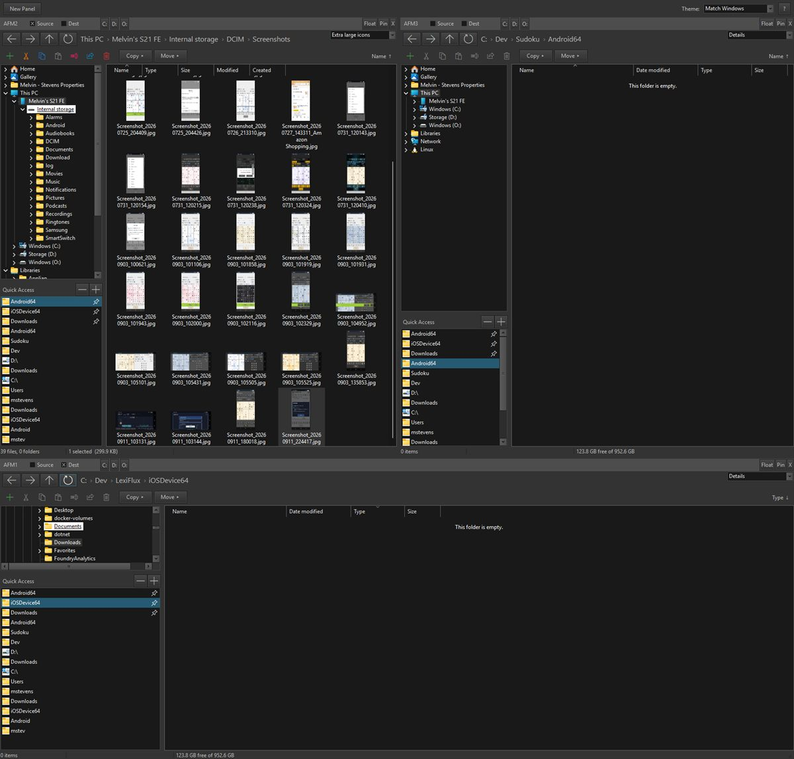

Another File Manager · AFM
A multi-panel file manager for Windows built on the real Explorer file view — so icons, context menus, columns and shell behaviour are exactly what you know — with as many browser panels as you like, docked, tabbed, floated or auto-hidden inside one window.
Windows 10 / 11 · In development, v1.6 · No ads, no telemetry

Three panels in one window — one of them browsing a phone plugged in over USB.
What it does
Open a new panel with one click (or Ctrl+T) and arrange them however you work — split, tab, float, pin or auto-hide, with tear-off drag and windowed splitters. A Visual-Studio-style dock manager, built for files.
Each panel embeds Windows’ own file view: the same icons, previews, column sort, right-click menus and keyboard shortcuts (Ctrl+C/X/V, F2, Del, F5, Backspace, Alt+←/→). Nothing is re-implemented badly.
Tick one panel as Source and another as Dest, then Copy or Move the selection across in one click — the two-pane workflow file managers were invented for, without giving up Explorer.
The folder tree is rooted at This PC, so a phone or camera connected over USB appears in it and can be browsed all the way down — tree, breadcrumb, Up and the file view all work inside the device.
Pinned folders and recently visited ones, shared across every panel: a pin toggle on every row, drag-to-reorder, multi-select, and per-drive C: D: … jump buttons in each panel header.
Window size and position, the layout inside each panel, and the sort column and direction per folder, per panel — across navigations and across restarts.
Eight light and dark styles bundled in the exe, plus Match Windows, which picks light or dark from the OS setting and follows it live. Nothing to install, nothing to download.
New folder, cut, copy, paste, rename, share and delete stay visible — muted when they don’t apply — with a status bar per panel: counts, selection size, free space.
No installer accounts, no telemetry, no update nags, no “premium” tier. A file manager should not have a business model that involves you.
Download
AFM is in active development and used every day on its author’s own machines — currently v1.6. It isn’t in a store yet. A download for Windows 10 and 11 will appear here when it’s ready for everyone; if you’d like to try it before then, just ask.
Enjoying the apps?
AFM, like every Apps No Ads app, is made by one person with no ads to pay for it. If it saves you a few clicks a day, a coffee is a lovely way to say thanks — never required, and nothing is locked behind it.
☕ Buy the author a coffeeAny amount, one time, via Stripe. No strings attached.